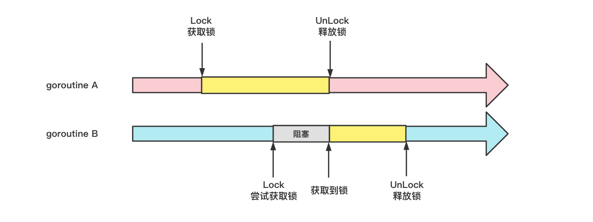

互斥锁与读写锁
简介
不要用共享内存来通信，要用通信来共享内存。
在Golang中channel属于first class级别，在实际编程中我们应该优先使用它来解决并发问题。当遇到channel无法解决的并发问题时，我们就可以用共享内存来实现并发编程，最常用的便是互斥锁（Mutex，全称mutual exclusion）和读写锁（RWMutex）。
互斥锁
1. 简介
当一个goroutine获取到Mutex权限后，如果其他goroutine请求获取该Mutex会阻塞在Lock方法，直到占用该Mutex的goroutine调用Unlock方法释放锁。

2. 使用
Mutex提供的接口如下：
Lock()：加锁Unlock()：解锁
假设我们需要对一个变量并发累加1000次，那么可以使用Mutex实现加锁：
package main
import (
"fmt"
"sync"
"time"
)
func main() {
var x int
var locker sync.Mutex
for i := 0; i < 1000; i++ {
go func() {
// 加锁
locker.Lock()
x++
// 解锁
locker.Unlock()
}()
}
time.Sleep(1 * time.Second)
fmt.Println("x: ", x)
}
// 输出:
x: 1000
读写锁
1. 简介
读写锁相较于互斥锁而言有一定的性能提升，应对的是单写多读模型：
读锁占用：阻塞写但不阻塞读
写锁占用：同时阻塞读和写
2. 使用
RWMutex提供的接口如下：
Lock()：写锁定UnLock()：写解锁RLock()：读锁定RUnlock()：读解锁
假设我们需要高并发读写一个map，那么可以使用读写锁封装一个线程安全的map：
package main
import (
"fmt"
"strconv"
"sync"
)
// SafeMap 并发读写安全的map
type SafeMap struct {
locker sync.RWMutex
m map[string]string
}
// get 读map
func (sm *SafeMap) get(key string) (value string, ok bool) {
sm.locker.RLock()
value, ok = sm.m[key]
sm.locker.RUnlock()
return
}
// set 写map
func (sm *SafeMap) set(key string, value string) {
sm.locker.Lock()
sm.m[key] = value
sm.locker.Unlock()
}
// NewSafeMap SafeMap构造函数
func NewSafeMap(size int) (sm *SafeMap) {
sm = &SafeMap{}
sm.m = make(map[string]string, size)
return
}
func main() {
wg := sync.WaitGroup{}
wg.Add(20000)
sm := NewSafeMap(10000)
// 10000个协程写map
for i := 0; i < 10000; i++ {
go func(index int) {
defer wg.Done()
sm.set(strconv.Itoa(index), strconv.Itoa(index * index))
}(i)
}
// 10000个协程读map
for i := 0; i < 10000; i++ {
go func(index int) {
defer wg.Done()
key := strconv.Itoa(index)
value, ok := sm.get(key)
fmt.Printf("ok:%t key:%s value:%s\n", ok, key, value)
}(i)
}
wg.Wait()
}